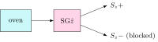

; sequential filters show that measuring destroys the information on
; sequential filters show that measuring destroys the information on Setup
An atom with magnetic moment in a field has energy , so it feels the force
For silver the moment comes from the single 5s electron, with (Gerlach and Stern 1922). Classically is continuous and the beam should smear; the experiment shows two spots: takes only the values .
takes only the values .
Sequential experiments
- SG
 → keep → SG: only comes out. Measurement is repeatable.
→ keep → SG: only comes out. Measurement is repeatable. - SG → keep → SG:
 in equal parts.
in equal parts. - SG → → SG → keep → SG: both reappear, 50/50.
Selecting erased the earlier knowledge of : and cannot be known together.
Why complex vectors
Write . The states must also be 50/50 in both the  and the
and the  basis:
basis:
Picture

Worked example
T/m, magnet length cm, silver at m/s, kg. Force N; time in magnet µs; deflection mm per beam — the 0.2–0.3 mm splitting seen in 1922.
Engineering applications
Spin filtering is the principle of spin valves and GMR read heads, of atomic-beam clocks (state selection of Cs atoms) and of spin-polarised electron sources.
Pitfall
The force needs an inhomogeneous field. A uniform  only produces a torque (precession), no deflection.
only produces a torque (precession), no deflection.